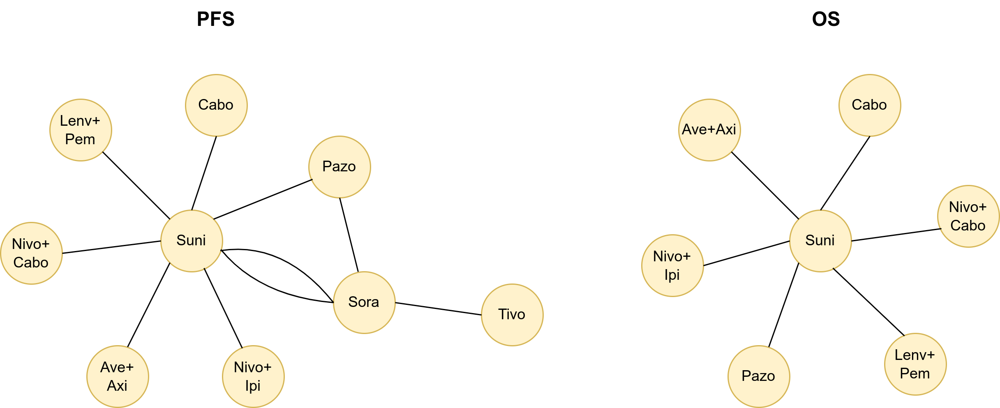

Detailed summary
TBC. This page is a work in progress
This repository contains code to support appraisal of the cost-effectiveness of treatments in advanced renal cell carcinoma. It is currently applied to an appraisal of cabozantinib and nivolumab. This application and an overview of the analysis and modelling steps performed are described below.
Background
Renal cell carnioma stages and risk groups
Renal cell carcinoma (RCC) is a type of kidney cancer. It is the most common type, accounting for over 80% of cases. The treatment strategy depends on RCC’s location and stage. The stages of RCC can be defined as:
| Stage 1 and 2 | Stage 3 | Stage 4 |
|---|---|---|
| Cancer is only in the kidney | Cancer may have spread to nearby lymph nodes | Cancer has metastasised, meaning it has spread to other areas of the body; Also known as advanced RCC (aRCC) |
People with aRCC who have not yet received systemic treatments (therapies that target cancer cells throughout the body) are classified as either being favourable-risk RCC or intermediate- and poor-risk RCC. These categories are defined in the International Metastatic Renal Cell Carcinoma Database Consortium (IMDC) criteria. They are established based on time from diagnosis, the patient’s ability to perform daily tasks, and some laboratory measurements. In the UK, most RCC patients are classified as intermediate or poor risk. Risk status is associated with clinical outcomes (for example, mortality rates). It is used to help guide decisions on which treatments to use.
For more information, see section 2.2 Epidemiology and 2.3.1 Risk Status in the Assessment Report.
Focus of the appraisal
The analysis in this repository is related to the NICE appraisal TA964 [1] which assesses the clinical- and cost-effectiveness of cabozantinib with nivolumab as a first-line therapy for patients with aRCC.
This treatment is a combination of:
- Cabozantinib - oral, 40mg daily
- Nivolumab - intravenous, 240mg every 2 weeks or 480mg every 4 weeks
It is a first-line (1L) systemic therapy, meaning it is for previously untreated patients. They may then have up to 3 more treatments (referred to as second-line (2L), third-line (3L) and fourth-line (4L) therapies), or at any point, may instead transition to receiving best-supportive care (BSC).
The appraisal compares this treatment against other 1L treatments. When modelling this, it includes a simulation of the subsequent treatments that people might receive after each.
For more information, see section 3.2 Interventions and 3.3 The RCC treatment pathway in the Assessment Report.
Summary diagram
Rough diagram
{kind=link}
Stage 1. Estimating the relative efficacy of each treatment
This stage aims to get data on the relative efficacy of each available treatment for aRCC at 1L to 4L, which is based on evidence from clinical trials.
Identification of randomised controlled trials
A systematic review was conducted to identified randomised controlled trials (RCTs) of patients with aRCC who received any of the treatments under comparison - namely: cabozantinib plus nivolumab; pazopanib; tivozanib; sunitinib; cabozantinib; nivolumab plus ipilimumab; pembrolizumab and lenvatinib; axitinib; lenvatinib plus everolimus; everolimus; nivolumab; avelumab plus axitinib
The studies had to report at least one of the outcomes of interest:
- Overall survival (OS) -
- Progression-free survival (PFS) -
- Time to next treatment (TTNT) -
- Time on treatment -
- Response rates -
- Duration of response -
- Adverse events (AEs) of treatment -
- Health-related quality of life (HRQoL) -
For more information, see section 3.1.1 Identification of systematic literature reviews and randomised controlled trials in the Assessment Report.
Network meta-analysis
To illustrate this, below are 1L network diagrams for PFS and OS, as based on Figures 16 and 17 in the Assessment Report.TODO:ref These show which treatments were directly compared head-to-head in a clinical trial.

OLD
In progress
terms to use: “comparative efficacy propagation”, “proportional hazards network meta analysis”, “fractional polynomial network meta analysis”
Population: Untreated advanced or metastatic RCC
Intervention: Cabo + Nivo
Comparators: Pazo, Tivo, Suni. Int/Poor: Cabo, Nivo+Ipi, Pem+Lenv
Outcomes: Overall survival, PFS, repsonse rates, duration
Model diagram
EOM:RCC is designed to model up to four lines of treatment before best supportive care. A diagram of the model is provided below. There are ten possible health states:
- First line (1L) off or on treatment
- Second line (2L) off or on treatment
- Third line (3L) off or on treatment
- Fourth line (4L) off or on treatment
- Best supportive case (BSC)
- Death
Transition between lines of treatment can be defined by either progression-free survival (PFS) or time to next treatment (TTNT). We are assuming good correlation between PFS and TTNT baesd on clinical advice and a publication provided by Logex. For Logex’s RWE, TTNT is the only option.